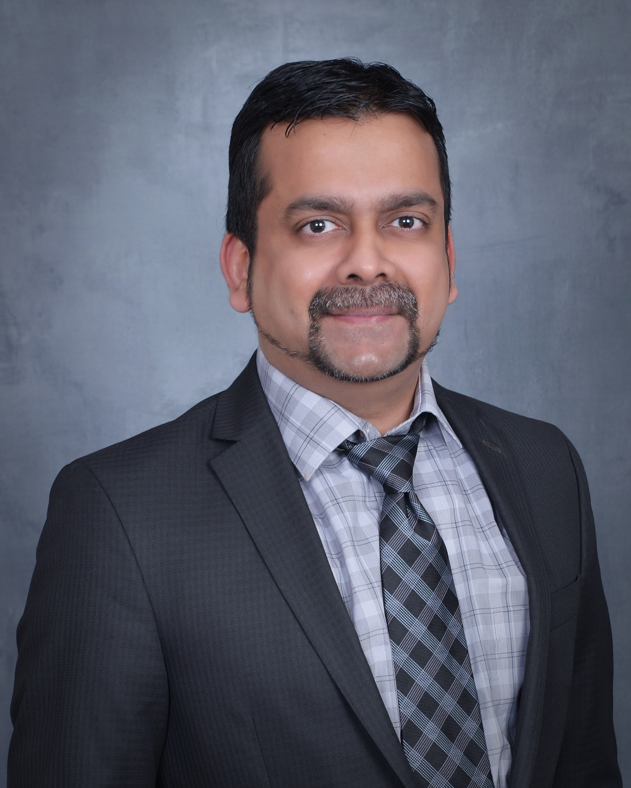
Research Interests
- Signal Processing & Wireless Communications
- Cellular & Wifi Standards - PHY systems
- Information Theory
Hi ! I'm currently a Senior Principal Architect at Marvell Technology, Santa Clara since Aug 2024. Previously I was a Staff Research Scientist @ Intel Labs, Santa Clara working on Signal Processing algorithms design between Sep 2018 and Aug 2024. Prior to that, I was a Staff Systems Researcher at Qualcomm Research - Corporate R & D, San Diego between 2014 and 2018. Between 2003 and 2009, I held various positions at Intel Corporation and Samsung R&D Institute. I received my Ph.D. and M.S. in Electrical & Computer Engineering from University of California, Irvine (UCI) in 2014, advised by Prof. Syed Ali Jafar and B.E.(Hons.) in Electrical Engineering from BITS Pilani, India in 2003. At UCI, I worked on Information Theoretic Capacity characterization of Multi-user Interference networks with Non-generic channels. Over the last 2 decades, I've contributed to systems research for various product designs and features including but not limited to Qualcomm Snapdragon chipsets (with Apple, Samsung, LG.. clientele), Oneweb satellite systems, Samsung Kalmia Modems, Intel FlexRAN, and DARPA SpaceBACN.
US Citizen
University of California, Irvine Ph.D. in Electrical & Computer Engineering Sep 2011 - Sep 2014 M.S. in Electrical & Computer Engineering Sep 2009 - Sep 2011 Thesis : Interference Alignment - Beyond Generic Channels Advisor : Prof. Syed A. Jafar PhD Committee: Prof. Hamid Jafarkhani & Prof. Ender Ayanoglu Birla Institute of Technology & Science, Pilani (India) B.E. (Hons.) in Electrical Engineering Aug 1999 - Jul 2003
Marvell Technology, Santa Clara -- Data Center & Carrier products
Senior Principal Architect Aug 2024 - Present
- Contributing to 5G-Advanced (Rel 18/19) feature enhancements for Marvell OCTEON 5G Baseband DSP products : such as 128 CSI-RS ports upgrade, various beam compression methods using SRS channel to 8/12 layers, CSI prediction for high mobility and enhanced energy saving. Performed system simulations in Matlab/C/Python, extensive profiling and fixed point analysis during various design phases.
Staff Research Scientist Sep 2018 - Aug 2024
- 3GPP 5G PHY: I was responsible for research and design of PHY algorithms for FlexRAN using Bayesian Inference, i.e., Variational Inference (VI) and Markov Chain Monte Carlo (MCMC) techniques. Co-author and inventor of Metropolis-Hastings Gradient Descent, which combined MCMC and Gradient descent techniques to enable superior performance at low complexity, winning ICC 2021 Best Paper Award. Championed Expectation Propagation based MIMO demodulation and characterized its performance+complexity for Intel FlexRAN. Developed AVX512 vectorized implementation of EP algorithm for 3GPP 5GNR PUSCH and PUCCH receiver processing pipelines, evaluated in Skylake Xeon and was adopted in FlexRAN. This improved BLER performance by upto ~2.5 dB, BER by 5 dB in various scenarios with 2.3x complexity of MMSE solution. Performed extensive analysis of correlation metrics considering MIMO channel propagation for dynamic switching of EP. Liaison for various NSF and Intel sponsored university research programs such as MLWiNS and RINGS.
- 3GPP Positioning: Lead research efforts for ML based multi-modal positioning algorithms involving TDOA, AOA, RSSI over reference signals such as SRS, PRS, TRS.. Demonstrated improved sub-meter positioning in Non-line of sight (NLoS) environments with business group & external partners. Adopted in Integrated sensing & Communications product roadmap. Multipath model for NLoS tracking was expanded using various architectures for fixed & mobile sensing.
- 3GPP Massive MIMO CJT: Contributed to design of Coherent Joint Transmission (CJT) feature in 3GPP towards Rel-19 standardization. Performed Analysis of Inter-site synchronization aspects such as phase, timing and frequency offsets and characterized realistic capacity improvements for both uplink and downlink CJT. Devised novel precoding algorithms for joint precoding from multiple TRPs, towards various DU-RU split architectures.
- DARPA program: Spearheaded Systems/Algorithms R & D efforts in various phases of DARPA SpaceBACN
program to build a Reconfigurable Coherent Optical Modem
(100Gbps, 100W, 100k$) and successfully delivered system model and algorithms design. Conceived the signal processing architecture, built a team from scratch to design and develop the system through all 3 phases of the program, winning over 7 competing designs.
Established strong working relationships with DARPA, MIT Lincoln Labs, AFRL for standardization and reported on transceiver design and performance in monthly meetings over 2 years. Responsible for complete design of DSP chiplet in 7x6 sq.mm consuming 13W, designed with Simulink
for high reconfigurability. Fully functional modem was recently demonstrated to Chief of Space Operations Gen. Chance Saltzman + US Space Force teams and delivered to Defense Innovation Unit (DIU) for on-orbit validation.
Staff Systems Researcher Oct 2014 - Aug 2018
- 3GPP NTN: Research and System design for Oneweb Low Earth Orbit (LEO) Satellite Communication Systems - I worked on the design and analysis of Reverse link channels primarily on User Terminals. This was an adaptation of LTE air interface with single carrier waveforms enabling Satellite to Ground communication in Ka, Ku bands, which eventually got standardized as part of 3GPP Non-Terrestrial Networks (NTN) Standards.
- 3GPP LTE+5GNR R&D: Contributed to Research & Design for Non-linear Interference Cancellation for Carrier aggregation usecases in LTE and 5G NR systems. Such carrier aggregation caused receiver desense due to harmonics and intermods within the receiver bands, which were digitally removed using digital self interference cancellation mechanisms. These designs were commercialized in various Qualcomm Snapdragon Modem chipsets between 2014 and 2017, used by Apple, Samsung, LG etc.. Closely partnered with Apple teams to deliver ~18 dB performance improvement and dynamic switching of NLIC feature. Resolved several complex system issues with TX carrier aggregation generating Inter-mod distortions.
Lead Engineer Apr 2006 - Jul 2009
Senior Engineer Dec 2004 - Mar 2006
- 3GPP GSM-EDGE DSP: Responsible for Research, Design of Interference Cancellation algorithms for 2G/3G Communication systems. Lead the Single antenna interference cancellation (SAIC) design and development for GSM/GPRS/EDGE chipsets of Samsung using Ceva Teak and Teaklite 3 DSP. Contributed to various stages of product design from algorithm research, design and DSP assembly programming, Inter-Operability testing and Field testing. Optimized various algorithms to meet stringent cycle consumption and memory budgets, and was later commercialized in Kalmia line of Samsung Multi-mode chipsets between 2009 and 2011.
- 3GPP2 EVDO Standards: I was also part of CDMA EVDO standardization group of Samsung focusing on Radio Link Protocol designs and Multi-flow architectures enabling diverse QoS guarantees, for which I also contributed to Modem designs for packet scheduling and QoS provisioning. Collaborated on various features for RLC, MFPA development in EVDO chipset family. Submitted several standard contributions towards new architecture of 1xEVDO Rel-B and Rel-C.
Software Engineer Aug 2003 - Dec 2004
- Design of various manufacturing system (FAB/ATM) software enhancements for the mission-critical system called "Recipe Correlation Table" (RCT) that manages lot-processing recipes in all Intel sites. Also, I was a developer for Unit Level Traceability (ULT) handler software for an important traceability program adopted in Intel manufacturing sites.
- US 12126440 B2 & EP 4020910 B1: Communication devices and methods based on markov-chain monte-carlo (mcmc) sampling
Intel : Sundar Krishnamurthy, Lu Lu, Niranjan Gowda, Le Liang, Richard Dorrance, Deepak Dasalukunte, Arvind Merwaday - US 12438752 B2 & DE 102022130131 A1: Methods and devices for joint processing in Massive MIMO systems
Intel : Lu Lu, Sundar Krishnamurthy, Clark Chen, Thushara Hewavithana - US 20260046637 A1 & EP 4693919 A2: System and methods for clustering, user association and power control to enable coherent joint transmission
Intel : Sundar Krishnamurthy, Lu Lu, Clark Chen, Thushara Hewavithana - US 20250309994 A1 & EP 4633062 A1: Reconfigurable Adaptive Equalization and Carrier Phase Recovery
Intel : Sundar Krishnamurthy, Daniel Zeleznikar, Deepak Dasalukunte, Jie Zhu, Paulino Mendoza, Conor O'Keeffe, Finbarr O'Regan, Ahmet Kirac - US 20240137115 A1: System and Method for Closed loop Doppler Tracking in Inter Satellite Links
Intel : Sundar Krishnamurthy, Conor O' Keeffe, Deepak Dasalukunte, Finbarr O'Regan, Abhinav Vinod - US 20240146500 A1: Method and Apparatus for Reconfigurable Clock Data Recovery in Fading Environments
Intel : Sundar Krishnamurthy, Deepak Dasalukunte, Conor O' Keeffe, Finbarr O'Regan, Amy Whitcombe - US 20250219739 A1: Reconfigurable deframer for optical communications
Intel : Sundar Krishnamurthy, Deepak Dasalukunte, Conor O'Keeffe, Finbarr O'Regan, Paulino Mendoza, Vesh Banjade, Daniel Zeleznikar - US 20250219740 A1: Coherent reception of on/off keying and pulse position modulations
Intel : Daniel Zeleznikar, Sundar Krishnamurthy, Deepak Dasalukunte, Ahmet Kirac, Ricard Enrich, Conor O'Keeffe, Finbarr O'Regan, Jie Zhu - US 20240146416 A1: Method and apparatus for enhancement of common mode rejection in coherent optic receivers
Intel : Conor O' Keeffe, Anthony Kelly, Adam Hermann, Finbarr O'Regan, Sundar Krishnamurthy, Amy Whitcombe, Ricard Enrich, Deepak Dasalukunte - US 20240106452 A1: Mixed-signal processing integrated in hybrid voltage-time ADC
Intel : Amy Whitcombe, Brent Carlton, Sundar Krishnamurthy, Deepak Dasalukunte - US 20240111346 A1: Chip and platform level power monitoring and sequencing for reliable startup and mode switching
Intel : Deepak Dasalukunte, Amy Whitcombe, Finbarr O'Regan, Conor O' Keeffe, Sundar Krishnamurthy - US 20250219735 A1: In-Field Droop Measurement and Compensation for a Coherent Optical Transceiver
Intel : Adam Hermann, Conor O'Keeffe, Anthony Kelly, Peter Kurahashi, Ricard Enrich, Deepak Dasalukunte, Sundar Krishnamurthy, Amy Whitcombe - US 20210174122 A1 & EP 4030383 A1: Probabilistic sampling acceleration and corner feature extraction for vehicle systems
Intel: Leobardo Macias, German Garcia, David Gutierrez, Sundar Krishnamurthy, Le Liang, Lu Lu, P. Mendoza, S. Mumtaz, J. Esquivel, R. Camacho - US 20170134074 A1: Cancellation signal generation for multiple input and multiple output (mimo) analog interference cancellation
Qualcomm: Ozgur Dural, Insoo Hwang, Won-ick Lee, Samir Soliman, Mark Maggenti, Kaushik Chakraborty, Sundar Krishnamurthy - US 8442103: Method and system for processing a signal in a communication system (Prefiltering for minimum phase)
Samsung: Sundar Krishnamurthy - INDIAN 257366: A method for value based shortening of sequence numbers in headers of ARQ protocols, used in communication systems
Samsung: Sundar Krishnamurthy, VTSV Prasad - INDIAN 257339: A method for performing reliable and best effort data transfer with fragmentation and framing in link protocols, used in communication systems
Samsung: VTSV Prasad, Ravi K Gouru, Sundar Krishnamurthy
Thesis - Interference Alignment : Beyond Generic Channels
The radical idea of Interference alignment enabled Capacity or Degrees of Freedom characterization (DoF, a first order approximation) for many multi-user interference networks. Various alignment schemes provided fundamental insights into the number of accessible signal dimensions in communication networks where the output signals are linear functions of the input signals.
Most of the prior art dealt with generic channels wherein the channel coefficients are assumed to be independent and drawn from a continuous distribution, continuous alphabet with infinite diversity, and the network is often single-hop. These assumptions were challenged due to the following reasons
- Poor scattering in MIMO systems and network topology lead to spatial dependencies, manifested as rank deficient channels,
- Multi-hop dependencies arise due to the presence of relays, and
- Linear network coding applications (as in wired networks) act as finite field counterparts of wireless networks, with limited diversity.
Single-hop Rank-deficient Interference channel: We found the DoF of the K-user MIMO rank deficient interference channel, with different ranks for the direct (D0) and the cross channels (D). For such rank deficient interference channels, it was shown that
- The rank deficiency of direct channels does not help DoF and could hurt, while
- The rank-deficiency of cross-channels does not hurt DoF and could improve.
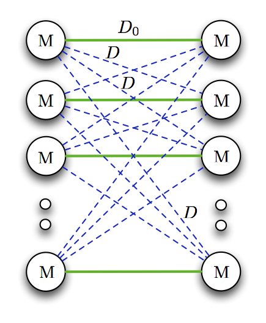
Conferences - Globecom 2012 , ISIT 2014 Journal - Trans on. Info Theory, Jan 2015
Multi-hop Rank-deficient Interference channel: We found the DoF of 2-hop MIMO rank deficient interference channel with different channel ranks in the first (D1) and the second hops (D2), for which a rank-matching principle was identified reminiscent of impedance matching in circuit theory. For this channel, the DoF loss was shown to be the rank-mismatch (|D1-D2|) between the two hops under moderate rank deficiencies.
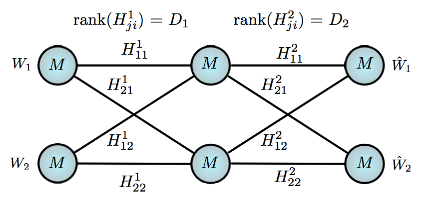
Conference - Globecom 2014 Journal - Trans. on Info Theory, Sep 2015
Finite field channels: Capacity results for the finite field counterparts of wireless networks were found, in order to explore the implications of channels being from a finite alphabet with limited diversity. By characterizing the capacity of constant finite field channels over Fp^n for 2-user X channel and 3-user interference channel, interesting parallels were drawn between p and SNR, and n and Channel Diversity.
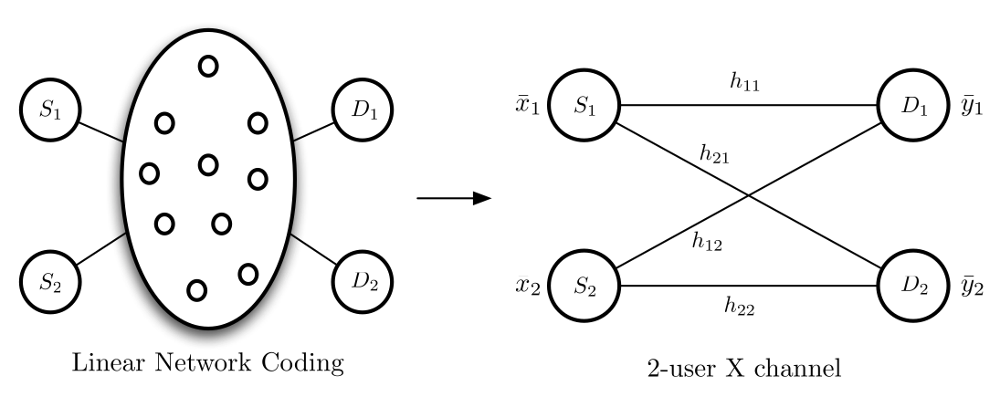
Conference - ISIT 2013 Journal - Trans. on Info Theory, July 2014
Journal Publications
- J1 : Sundar R. Krishnamurthy, Abinesh Ramakrishnan, Syed A. Jafar, Degrees of Freedom of Rank Deficient MIMO Interference Networks, IEEE Transactions in Information Theory, Vol. 61, no. 1, pp. 341 - 365, Jan 2015
- J2 : Sundar R. Krishnamurthy, Syed A. Jafar, On the Capacity of the Finite Field Counterparts of Wireless Interference Networks, IEEE Transactions in Information Theory, Vol. 60, no. 7, pp. 4101- 4124, July 2014 (Arxiv: 1304.7745)
- J3 : Hua Sun, Sundar R. Krishnamurthy, Syed A. Jafar, Rank-Matching for Multihop Multiflow, IEEE Transactions in Information Theory, Vol. 61, no. 9, pp. 4751 - 4764, Sep 2015 (Arxiv: 1405.0724)
- C1: Niranjan Gowda, Sundar Krishnamurthy, Andrey Belogolovy, Metropolis-Hastings Random Walk along the Gradient Descent Direction for MIMO Detection, IEEE International Conference on Communications (ICC), Montreal, June 2021 (Best Paper Award)
- C2 : Sundar R. Krishnamurthy, Syed A. Jafar, Rank-Matching for Multihop Multiflow, IEEE Global Telecommunications Conference (GLOBECOM), Austin, December 2014
- C3 : Abinesh Ramakrishnan, Sundar R. Krishnamurthy, Syed A. Jafar, Yaming Yu, Degrees of Freedom of Interference channel with Rank-Deficient Transfer matrix, IEEE International Symposium on Information Theory (ISIT), Honolulu, July 2014
- C4 : Sundar R. Krishnamurthy, Syed A. Jafar, Precoding Based Network Alignment and Capacity of a Finite Field X Channel, IEEE International Symposium on Information Theory (ISIT), Istanbul, July 2013
- C5 : Sundar R. Krishnamurthy, Syed A. Jafar, Degrees of Freedom of 2-user and 3-user Rank-Deficient MIMO Interference Channels, IEEE Global Telecommunications Conference (GLOBECOM), Anaheim, December 2012
- C6 : Sundar R. Krishnamurthy, An Efficient Approach to Minimum Phase Prefiltering of Short Length Filters, 8th IEEE International Symposium on Signal Processing and Information Technology (ISSPIT), Sarajevo, December 2008
Copyright information for IEEE publications: Copyright is held by IEEE. Personal use of this material is permitted. However, permission to reprint/republish this material for advertising or promotional purposes or for creating new collective works for resale or redistribution to servers or lists, or to reuse any copyrighted component of this work in other works must be obtained from the IEEE.
- Divisional Recognition Awards @ Intel Labs for leading Algorithms Research in DARPA SpaceBACN - 2022,2024
- Distinguished Invention Award @ Intel Labs for MCMC techniques - 2021
- Best Paper Award in IEEE International Conference on Communications (ICC) - 2021
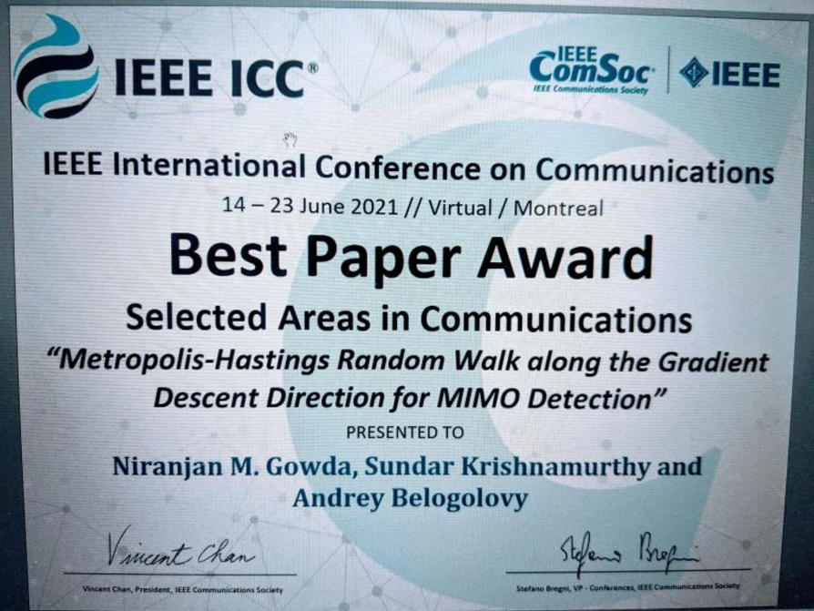 |
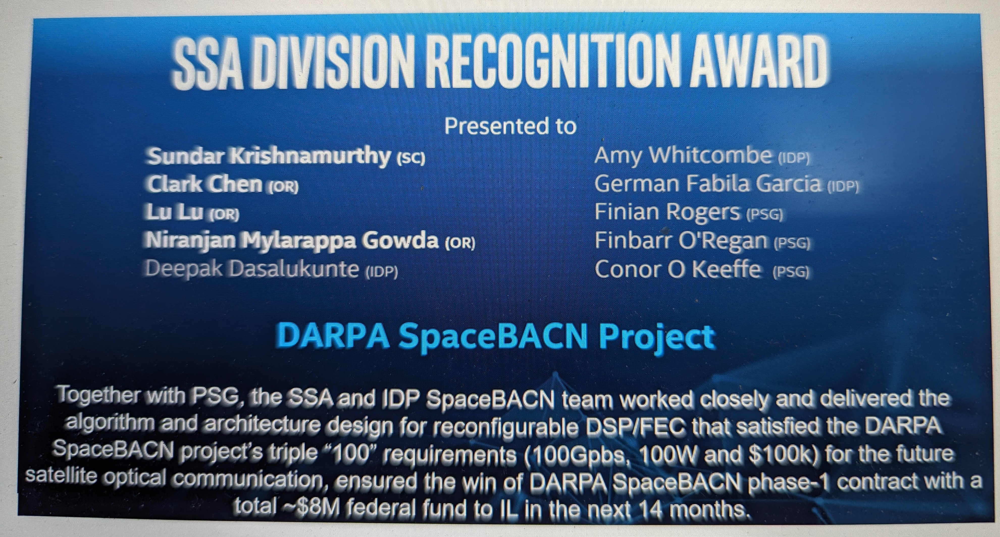 |
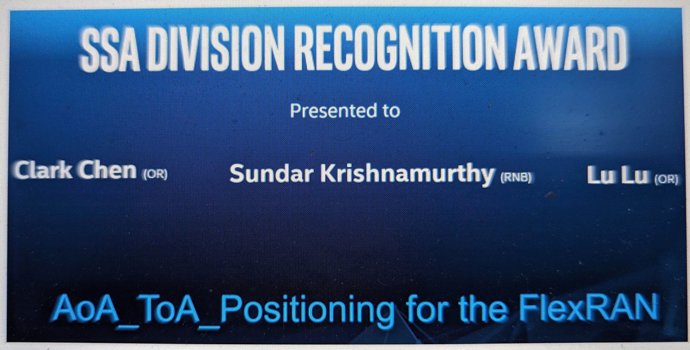 |
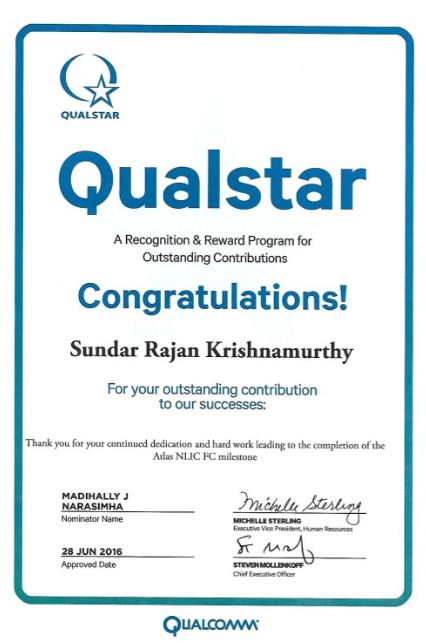 |
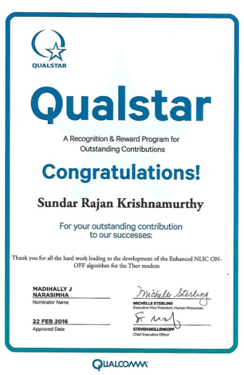 |
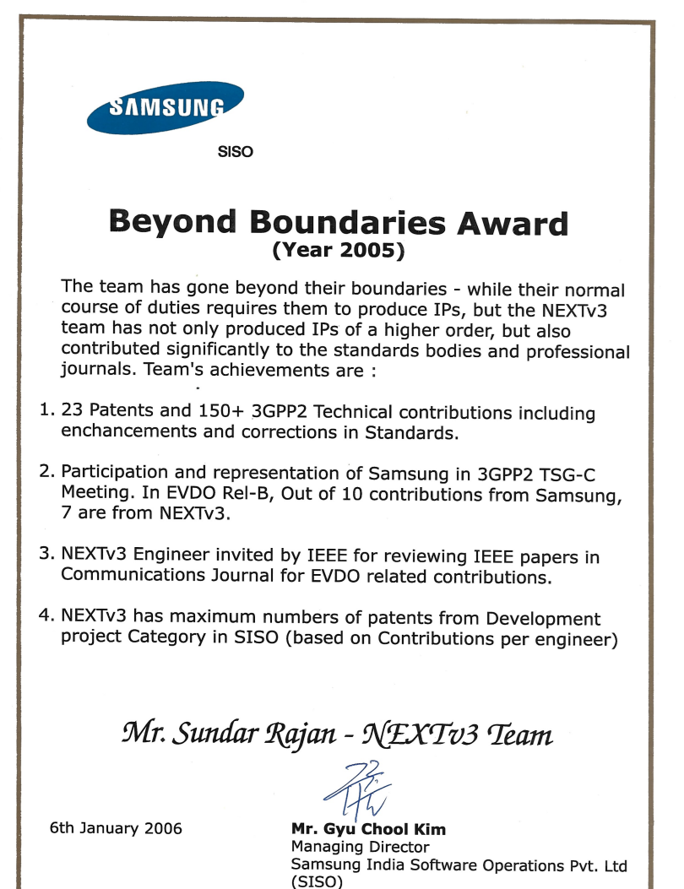 |
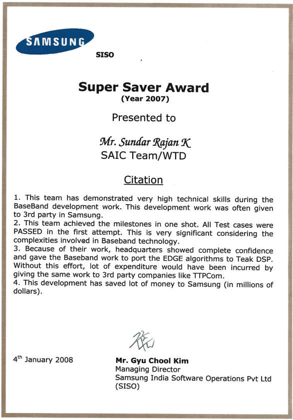 |
Courses
UC Irvine (Graduate): Information Theory, Estimation and Detection Theory, Design & Analysis of Algorithms, Advanced System Software, Digital Signal Processing, Digital Communications I & II, Digital Image Processing, Random Processes, Space Time Coding, Wireless Communications
Stanford (Coursera): Machine Learning, Neural Networks and Deep Learning, Improving Deep Neural Networks, Convolutional Neural Networks, Structuring Machine Learning Projects, Sequence Models, AI for everyone
Competencies
Software: C/C++, MATLAB, Python, CUDA, SQL, Java
Profiling: perf, gprof, VTune, Valgrind
Tools/Libraries: Visual Studio, VTune, Intel AVX2, AVX512
DSP/ARM: Simulink-HDL, Qualcomm QDSP6, Ceva Teak, Teaklite-3, Tensilica, ARM v7+.
ML Frameworks: Tensorflow, PyTorch, NumPy
Reviewer: IEEE Transactions in Information Theory, IEEE Transactions in Signal Processing, IEEE Transactions in Vehicular Technology, IEEE Transactions in Wireless Communications, and several conferences
Member: IEEE Information Theory Society, IEEE Signal Processing Society, IEEE Communications Society